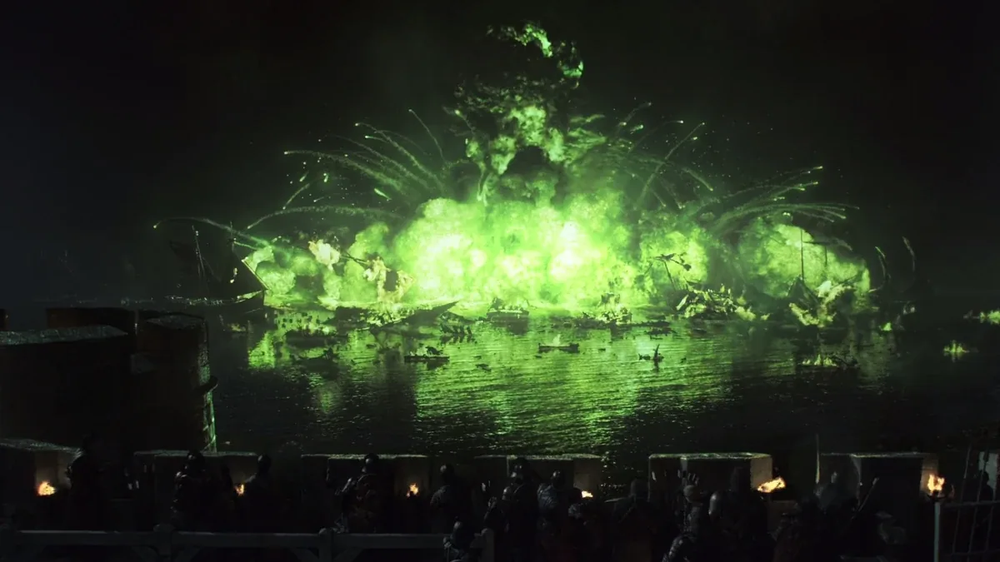
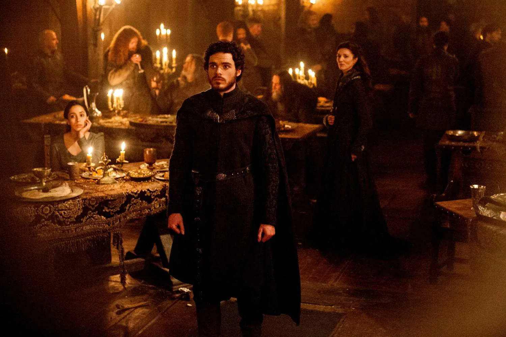
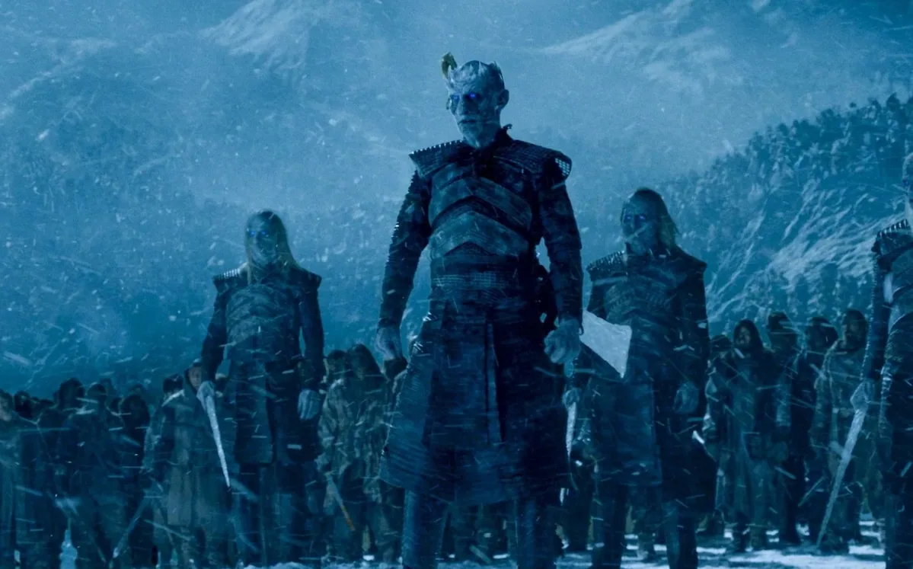
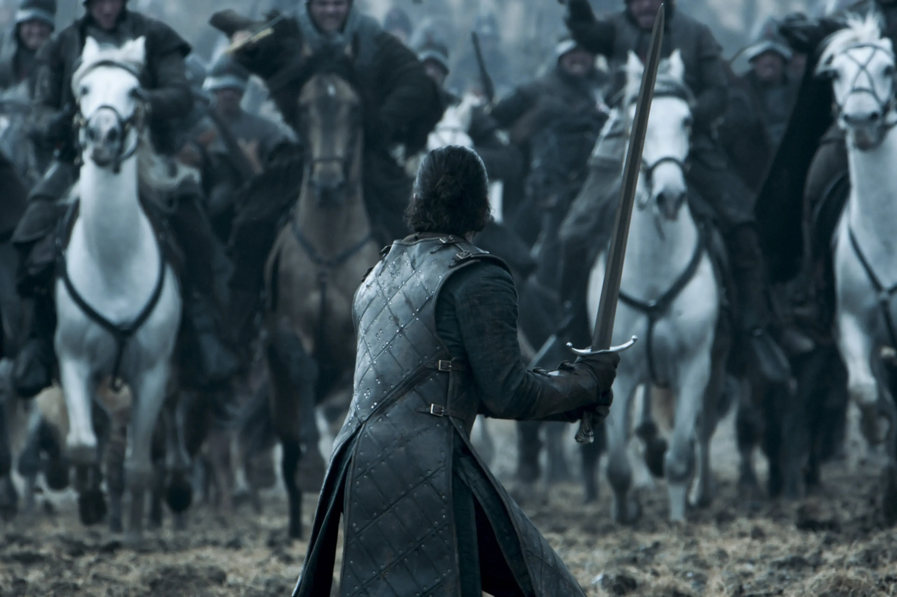
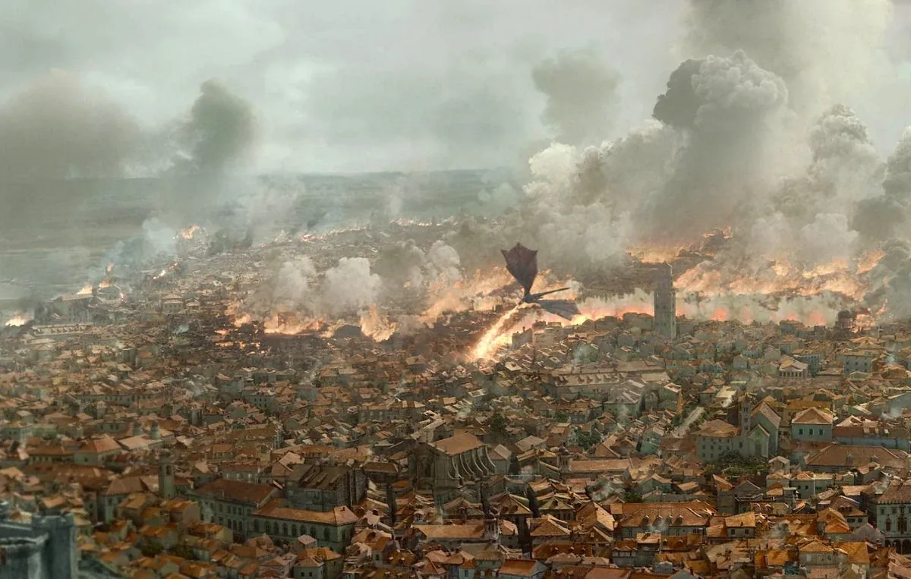

historical record & chronology
A chronological record of the era’s major events. Follow what happened and when, with each entry anchored to its place in the historical sequence rather than the broader narrative arc.
Robert Baratheon's death sets off a quiet argument about succession that turns into a five-way war within a season.
VIEW DETAILS ↗Ned Stark discovers a secret worth dying for, then does exactly that, in public, in front of his own daughters.
VIEW DETAILS ↗
A fleet sails for King's Landing expecting an easy siege and sails into a river that has been quietly rigged to explode.
VIEW DETAILS ↗
A wedding meant to end a war ends a bloodline instead. The North stops trusting invitations for a generation.
VIEW DETAILS ↗Three dragons, a growing army, and a very long boat ride finally bring the last Targaryen back toward home.
VIEW DETAILS ↗
Everyone who spent two seasons ignoring the North's warnings suddenly has a great deal of ice to deal with.
VIEW DETAILS ↗
The North is won back in the mud outside Winterfell, in a fight decided less by strategy than by who had more men left standing.
VIEW DETAILS ↗
A war fought in the name of mercy ends with a capital reduced to ash — the kind of victory that leaves the winner with nothing to actually rule.
VIEW DETAILS ↗A war fought over a chair ends with the chair gone, and the Seven Kingdoms deciding — for the first time in centuries — to actually vote on who's next.
VIEW DETAILS ↗